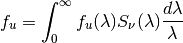
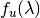
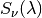
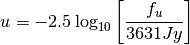
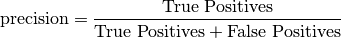
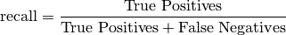
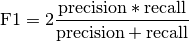

4. Classification: Learning Labels of Astronomical Sources¶
Modern astronomy is concerned with the study and characterization of distant objects such as stars, galaxies, or quasars. Objects can often be very quickly characterized through detailed measurements of their optical spectrum. A spectrum is a measure of the photon flux (that is, the number of photons per second) as a function of photon frequency or wavelength.

The spectrum of the star Vega ( -Lyr) with the five filters
from the Sloan Digital Sky Survey (SDSS), which are denoted by the letters
u (ultraviolet), g (green), r (red), i (infrared),
and z (infrared).
-Lyr) with the five filters
from the Sloan Digital Sky Survey (SDSS), which are denoted by the letters
u (ultraviolet), g (green), r (red), i (infrared),
and z (infrared).
The above spectrum is that of the star Vega, the brightest star in the northern constellation Lyra. Its surface is at about 9600 degrees Kelvin, and its spectrum is roughly that of a 9600K black-body, with absorption due to molecules in its atmosphere. Because of the quantum mechanical properties of atoms, different atoms can absorb light at only specific, discrete wavelengths. Because of this fact, characteristic patterns in the spectrum of a distant star can be used to infer its chemical composition!
In the spectrum above, the deepest of these absorption spikes are due to the energy levels of Hydrogen. From examination of high-resolution spectra like this one, one can learn a lot about the physical processes at work in a distant astronomical source. Unfortunately, spectra like these are very time-consuming and expensive to obtain, especially for very faint objects. For this reason, astronomers have long observed objects through broad-band filters. For the u-band filter shown above, the flux is given by

where  is the filter transmission, and
 is the flux density of the spectrum at
wavelength  .
For historical reasons, astronomers report the flux using the magnitude
system, where the magnitude is defined by
.
For historical reasons, astronomers report the flux using the magnitude
system, where the magnitude is defined by

The denominator is a normalization constant, measured in Janskys. To reduce the uncertainty associated with absolute calibration from telescope to telescope or from night to night, astronomers generally work in terms of the color, defined as the difference of magnitudes between two different filter bands. Subtracting two magnitudes reduces this uncertainty. For example, an observation of the star Vega above will consist of a vector four numbers: [u-g, g-r, r-i, i-z].
With the difficulty of obtaining informative spectra, and the relative ease of obtaining color information, machine-learning tasks in Astronomy are often based on a small spectroscopic training set, which is applied to a larger set of photometric observations with unknown classification. We’ll examine a few of these situations here.
4.1. Motivation: Why is this Important?¶
The study of quasars, an amalgamation of the words “quasi-stellar radio source”, has led to many advances in our understanding of fundamental physics. Quasars, also commonly referred to as QSOs (Quasi-Stellar Objects) or AGNs (Active Galactic Nuclei) are galaxies which contain supermassive black holes at their core. These black holes can weigh-in at over 10 billion times the mass of our sun, and can be luminous enough to out-shine their entire galaxy. Here we show three different objects, chosen from among the millions of sources catalogued by the Sloan Digital Sky Survey:

The featured object is at the center of each image. On the left is a star, in the center is a galaxy, and on the right is a distant quasar. From these images alone, it would be impossible to distinguish between the star and the quasar: both are unresolved point-sources of similar apparrent brightness. If a spectrum were available, distinguishing between them could be accomplished rather straightforwardly, but spectra are not always available. Using multi-color photometric information, rather than just a single image, however, this task becomes feasible. The goal here is to design a machine-learning algorithm which can accurately distinguish stars from quasars based on multi-color photometric measurements.
4.2. Star-Quasar Classification: Naive Bayes¶
Note
The information in this section is available in an interactive notebook 07_classification_example.ipynb, which can be viewed using iPython notebook. An online static view can be seen here.
In the folder $TUTORIAL_HOME/data/sdss_colors, there is a script fetch_data.py which will download the colors of over 700,000 stars and quasars from the Sloan Digital Sky Survey. 500,000 of them are training data, spectroscopically identified as stars or quasars. The remaining 200,000 have been classified based on their photometric colors.
Here we will use a Naive Bayes estimator to classify the objects. First, we will construct our training data and test data arrays:
>>> import numpy as np
>>> train_data = np.load('data/sdss_colors/sdssdr6_colors_class_train.npy')
>>> test_data = np.load('data/sdss_colors/sdssdr6_colors_class.200000.npy')
Now we must put these into arrays of shape (n_samples, n_features) in order to pass them to routines in scikit-learn. Training samples with zero-redshift are stars, while samples with positive redshift are quasars:
>>> X_train = np.vstack([train_data['u-g'],
... train_data['g-r'],
... train_data['r-i'],
... train_data['i-z']]).T
>>> y_train = (train_data['redshift'] > 0).astype(int)
>>> X_test = np.vstack([test_data['u-g'],
... test_data['g-r'],
... test_data['r-i'],
... test_data['i-z']]).T
>>> y_test = (test_data['label'] == 0).astype(int)
Notice that we’ve set this up so that quasars have y = 1, and stars have y = 0. Now we’ll set up a Naive Bayes classifier. This will fit a four-dimensional uncorrelated gaussian to each distribution, and from these gaussians quickly predict the label for a test point:
>>> from sklearn import naive_bayes
>>> gnb = naive_bayes.GaussianNB()
>>> gnb.fit(X_train, y_train)
>>> y_pred = gnb.predict(X_test)
Let’s check our accuracy. This is the fraction of labels that are correct:
>>> accuracy = float(np.sum(y_test == y_pred)) / len(y_test)
>>> print accuracy
0.617245
We have 61% accuracy. Not very good. But we must be careful here: the accuracy does not always tell the whole story. In our data, there are many more stars than quasars
>>> print np.sum(y_test == 0)
186721
>>> print np.sum(y_test == 1)
13279
Stars outnumber Quasars by a factor of 14 to 1. In cases like this, it is much more useful to evaluate the fit based on precision and recall. Because there are many fewer quasars than stars, we’ll call a quasar a positive label and a star a negative label. The precision asks what fraction of positively labeled points are correctly labeled:

The recall asks what fraction of positive samples are correctly identified:

We can calculate this for our results as follows:
>>> TP = np.sum((y_pred == 1) & (y_test == 1))
>>> FP = np.sum((y_pred == 1) & (y_test == 0))
>>> FN = np.sum((y_pred == 0) & (y_test == 1))
>>> print TP / float(TP + FP) # precision
0.142337086782
>>> print TP / float(TP + FN) # recall
0.948113562768
For convenience, these can be computed using the tools in the metrics sub-package of scikit-learn:
>>> from sklearn import metrics
>>> metrics.precision_score(y_test, y_pred)
0.14233708678153123
>>> metrics.recall_score(y_test, y_pred)
0.94811356276828074
Another useful metric is the F1 score, which gives a single score based on the precision and recall for the class:

In a perfect classification, the precision, recall, and F1 score are all equal to 1.
>>> metrics.f1_score(y_test, y_pred)
0.24751550658108151
For convenience, sklearn.metrics provides a function that computes all of these scores, and returns a nicely formatted string. For example:
>>> print metrics.classification_report(y_test, y_pred, target_names=['Stars', 'QSOs'])
precision recall f1-score support
Stars 0.99 0.59 0.74 186721
QSOs 0.14 0.95 0.25 13279
avg / total 0.94 0.62 0.71 200000
We see that for Gaussian Naive Bayes, our QSO recall is fairly good: we are correctly identifying 95% of all quasars. The precision, on the other hand, is much worse. Of the points we label quasars, only 14% of them are correctly labeled. This low precision leads to an F1-score of only 0.25. This is not an optimal classification of our data. Apparently Naive Bayes is a bit too naive for this problem.
Later, in Exercise #1, we will apply a more sophisticated learning method to this task, which will potentially improve on these results.